Potions
- 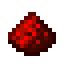 Redstone increases the duration of effects. Weakens enhanced potions.
- 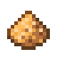 Glowstone Dust enhances effects, but reduces their duration.
- 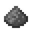 Gunpowder makes potions explosive.
- 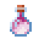 Dragon's Breath makes potions foggy (settling).
| Name | Effect (duration) | Recipe | |||
|---|---|---|---|---|---|
| No amplifiers | + | + | |||
| Akward Potion | No effect | — | — |
|
|
| 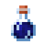 | Night Vision Potion | Night Vision (3:00): Allows you to see much better in the dark. |
Night Vision (8:00): Allows you to see much better in the dark. |
— |
|
| 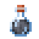 | Invisibility potion | Invisibility (3:00): The player becomes invisible. |
Invisibility (8:00): The player becomes invisible. |
— |
|
| 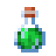 | Potion of Jumping | Jumping (3:00): Allows you to jump ½ block higher. |
Jumping (8:00): Allows you to jump ½ block higher. |
Jumping II (1:30): Allows you to jump 1 ¼ blocks higher. |
|
| 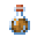 | Potion of Fire Resistance | Fire Resistance (3:00): Immunity to damage from lava, magma blocks, bonfires, and efreeti alike. |
Fire Resistance (8:00): Immunity to damage from lava, magma blocks, bonfires, and efreeti alike. |
— |
|
| 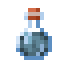 | Potion of Swiftness | Speed (3:00): Increases movement speed by 20%. |
Speed (8:00): Increases movement speed by 20%. |
Speed II (1:30): Increases movement speed by 40%. |
|
| 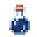 | Water Breathing Potion | Water Breathing (3:00): Allows you to not breathe underwater. |
Water Breathing (8:00): Allows you to avoid breathing underwater. |
— |
|
| 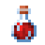 | Healing Potion | Healing: +4 units. health ( ). |
— | Healing II: +8 units. health ( ) |
|
| 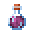 | Regeneration Potion | Regeneration (0:45): Restores 1 unit. health ( ) every 2.5 seconds. |
Regeneration (1:30): Restores 1 unit. health ( ) every 2.5 seconds. |
Regeneration II (0:22): Restores 1 unit. health ( ) every 1.2 seconds. |
|
| 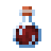 | Potion of Strength | Strength (3:00): Increases the player's damage dealt by 3. |
Strength (8:00): Increases the player's damage dealt by 3. |
Strength II (1:30): Increases the player's damage dealt by 6. |
|
 rabbit's foot
rabbit's foot